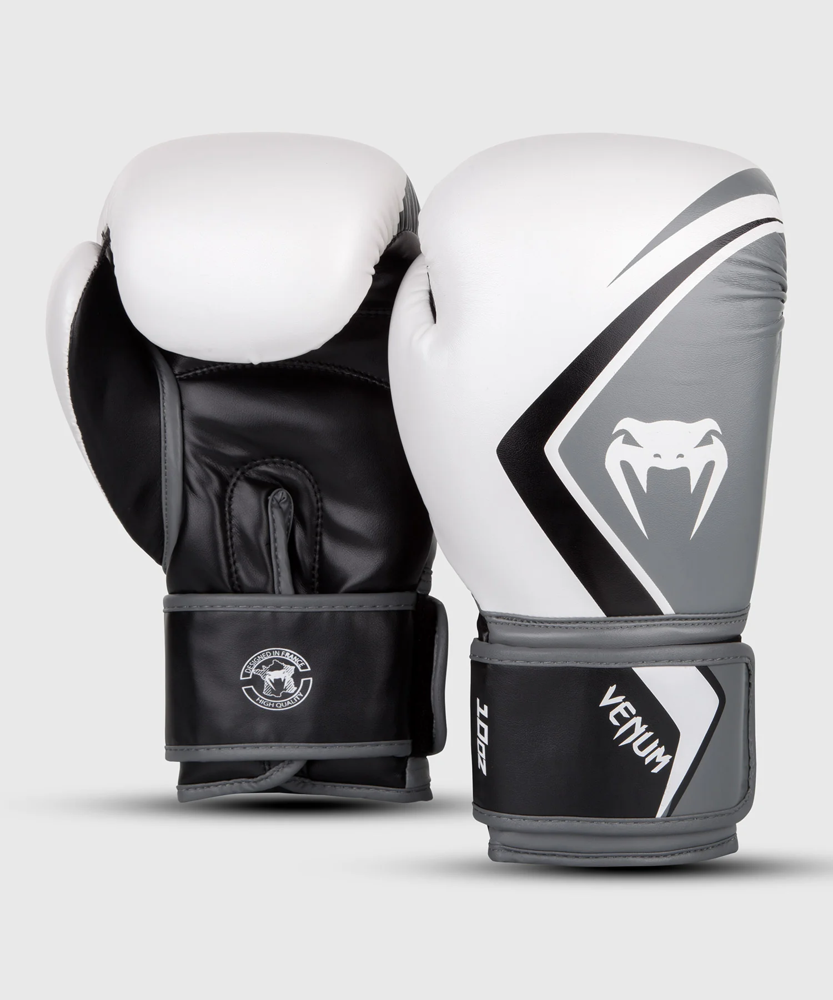
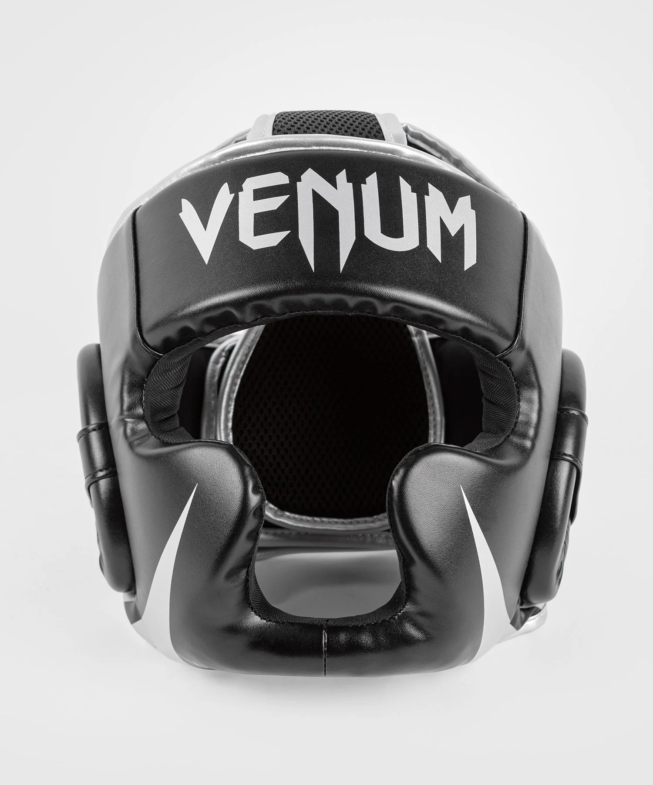

Guantes Venum Challenger 3.0 Oz
Acolchado de 8 oz. Espuma inyectada de alta calidad que garantiza una absorción de impactos óptima. Interior de neopreno: absorción de sudor. Velcro de calidad: para un mejor soporte de la muñeca. Impresión de pantalla de calidad: larga vida, sin igual. Pulgar unido para reducir el riesgo de lesiones. Palma abierta Logo Venum

Guantes de Boxeo Venum Contender 2.0 - Blanco/Gris-Negro 10 Oz
Funda de microfibra PU (fabricada en Japón) para una larga vida útil. Cuatro capas de espumas naturales, Palma perforada: mejor transpirabilidad, Forma anatómica / agarre: colocación optimizada del puño, Protección optimizada de los nudillos y la mano, Costuras reforzadas: durabilidad, Gran cierre de velcro: soporte y ajuste óptimos, Puño largo: protección y estabilidad de la muñeca, Totalmente montado y cosido a mano en Tailandia.

Espinilleras MMA-Kick boxing
100 % Semi-cuero Logotipo Venum impreso en la parte frontal Cerramientos en Velcro Espuma de alta densidad con almohadilla adicional en toda la espinilla Ligeras en peso Marca en relieve y gráficos sofisticados

Casco Venum Challenger - Negro/Plata
Concepción semi cuero. Ultraligero. Espuma contorneada de triple densidad para prevenir traumatismos craneales. Protección de cabeza, mejillas, orejas y barbilla. Cierre de velcro flexible de dos vías. Talla única. SKU : VENUM-2052-128